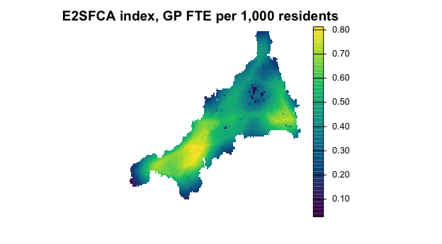
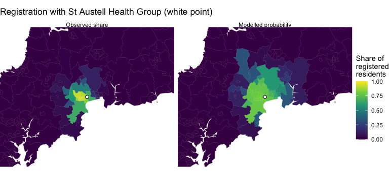

spax supports two user workflows: public floating catchment area (FCA) methods for accessibility surfaces, and an experimental static conditional-logit model (CLM) workflow for fitting allocation to observations, inspecting results, and evaluating supply scenarios. Both use explicit demand, facility supply and travel inputs. Their normalization and output meanings remain model-specific.
Existing spax_2sfca(), spax_e2sfca(), spax_m2sfca() and compute_access() workflows remain supported, and the experimental spax_3sfca() and spax_huff2sfca() add selection-weighted variants. The allocation functions are an additional route; they do not replace the FCA functions. Internal feedback-model machinery is private and is not part of the experimental CLM interface.
Install
Use R 4.4.0 or newer. This is the supported dependency and testing floor for spax 0.3.1. Existing public FCA calling semantics are unchanged.
Install version 0.3.1 by its release tag rather than from the repository’s default branch:
# install.packages("pak")
pak::pak("Songyosr/spax@v0.3.1")The allocation interface is experimental and may change in later versions. For reproducible work, record the package version and retain the input IDs, units, observation declaration and saved results. Development continues on the develop branch (pak::pak("Songyosr/spax@develop")).
Each release is archived on Zenodo; doi:10.5281/zenodo.23438611 refers to all versions (version 0.3.0 is doi:10.5281/zenodo.23438612). Cite the version you used with citation("spax").
Package and function help are available from an installed package. Installations that include built articles also provide the guides, which follow one reader journey: Get started, the example data and data preparation, the FCA guides, then the allocation model (model choice, the workflow and bootstrap intervals):
# Package overview, and notes on reusing saved results
help(package = "spax")
help("spax-package", package = "spax")
help("allocation-compatibility", package = "spax")
# The guides
browseVignettes("spax")
# When the installation includes built vignettes:
vignette("spax", package = "spax") # Get started
vignette("cornwall-data", package = "spax")
vignette("model-choice", package = "spax")
vignette("allocation-workflow", package = "spax")
vignette("facility-bootstrap", package = "spax")Quick start: GP practices in Cornwall
spax ships open example data for the 55 general practices of Cornwall and the Isles of Scilly: practice locations and GP full-time equivalents (FTE, excluding GPs in training) in cornwall_gp, small areas with registered residents in cornwall_lsoa, small area × practice registrations in cornwall_flows and travel minutes in cornwall_travel, plus a WorldPop 2020 population grid and one travel-time layer per practice. The Isles of Scilly have no road link to the mainland, so this example models mainland Cornwall only: it drops the islands’ practice and small area, and crops the islands from the grids. vignette("cornwall-data", package = "spax") describes each object, its sources and its licences.
An FCA accessibility map
FCA entry points take a demand raster and one aligned travel layer per facility, with layer names matching facility IDs.
library(spax)
library(terra)
library(sf)
library(dplyr)
library(ggplot2)
# Mainland practices, as a plain table
mainland_gp <- cornwall_gp |>
filter(!scilly) |>
st_drop_geometry()
# Residents per grid cell, and travel minutes with one layer per practice;
# crop both to the mainland (west edge at 6 degrees W)
pop <- read_spax_example("cornwall_pop.tif")
travel_grid <- read_spax_example("cornwall_gp_travel.tif")
mainland <- ext(-6, xmax(pop), ymin(pop), ymax(pop))
pop <- crop(pop, mainland)
travel_grid <- crop(travel_grid[[mainland_gp$practice]], mainland)
fca <- spax_e2sfca(
demand = pop,
supply = mainland_gp,
distance = travel_grid,
decay_params = list(method = "gaussian", sigma = 10),
id_col = "practice", # matches supply rows to travel layers
supply_cols = "gp_fte_extg"
)
plot(
1000 * fca$accessibility,
axes = FALSE,
col = hcl.colors(50, "viridis"),
main = "E2SFCA index, GP FTE per 1,000 residents"
)
This is an enhanced two-step FCA index: supply per distance-weighted population, in GP FTE per 1,000 residents. The 10-minute Gaussian scale is a choice for this example, not an estimate. The index is a supply-per-demand score, not a probability that anyone uses a practice. See ?spax_e2sfca for decay and normalization options, and summary(fca) or plot(fca) to inspect the result.
A static CLM fitted to registrations
The CLM route takes numeric vectors and an origin-by-facility travel matrix, and fits where people choose to go. Here demand is the residents of each small area registered with any GP practice in England, supply is GP FTE, and the target is the observed small area × practice registrations. The model includes an outside option, which here stands for registration with a practice outside mainland Cornwall (for example in Devon or on the Isles of Scilly); it is not unmet need.
mainland_lsoa <- cornwall_lsoa |>
filter(!scilly) |>
st_drop_geometry()
# Travel minutes (small areas x practices), demand and supply, named by ID
travel <- cornwall_travel[mainland_lsoa$lsoa, mainland_gp$practice]
demand <- setNames(mainland_lsoa$registered, mainland_lsoa$lsoa)
supply <- setNames(mainland_gp$gp_fte_extg, mainland_gp$practice)
# Observed registrations as a small area x practice matrix (zero if none)
observed <- matrix(
0,
nrow = nrow(travel),
ncol = ncol(travel),
dimnames = dimnames(travel)
)
keep <- cornwall_flows$lsoa %in% rownames(travel) &
cornwall_flows$practice %in% colnames(travel)
observed[cbind(cornwall_flows$lsoa[keep], cornwall_flows$practice[keep])] <-
cornwall_flows$patients[keep]
# Check and align the inputs once; unit labels are recorded, not converted
inputs <- prepare_allocation(
demand = demand,
supply = supply,
distance = travel,
metadata = list(
demand_units = "registered residents",
demand_period = "July 2026",
supply_units = "GP FTE excluding GPs in training",
supply_period = "June 2026",
travel_units = "minutes"
)
)
# Gaussian travel decay with a fitted outside weight v0
model <- clm_allocation(inputs, family = "gaussian", fit_v0 = TRUE)
# Fit the flows from three explicit starts with a Poisson loss
starts <- rbind(
near = c(sigma = 3, v0 = 0.05),
middle = c(sigma = 6, v0 = 0.01),
far = c(sigma = 12, v0 = 0.002)
)
fit <- fit_allocation(
model = model,
observed = observed,
starts = starts,
lower = c(sigma = 0.5, v0 = 1e-6),
upper = c(sigma = 60, v0 = 10),
output = "flow",
loss = "poisson",
gradient = TRUE,
control = list(maxit = 300, factr = 10, pgtol = 1e-8)
)
coef(fit)
# Per cent registered outside mainland Cornwall: observed and modelled
outside <- c(
observed = 1 - sum(observed) / sum(demand),
modelled = 1 - sum(fitted(fit)) / sum(demand)
)
round(100 * outside, 2)The fitted Gaussian scale is about 4.6 minutes: registration is very local. The printed shares are percentages of registered residents. Practice totals of the fitted flows correlate at 0.93 with the observed ones. One constant outside weight understates registration outside mainland Cornwall, which is concentrated in a few areas near the Devon border. Poisson fitting is chosen explicitly (the fitting default is weighted SSE); inspect summary(fit) for all starts, failures and boundaries.
predict_allocation() returns choice probabilities for requested areas. For the practice with the largest list, St Austell Health Group, the modelled probability can be set beside the observed share of each area’s registered residents:
# Choice probabilities for every small area
prediction <- predict_allocation(
source = fit,
distance = travel,
demand = demand,
outputs = "allocation"
)
# Observed share and modelled probability for one practice, in one table
st_austell <- "Y04957" # St Austell Health Group
shares <- bind_rows(
data.frame(
lsoa = rownames(travel),
source = "Observed share",
value = observed[, st_austell] / demand
),
data.frame(
lsoa = rownames(travel),
source = "Modelled probability",
value = prediction$outputs$allocation[, st_austell]
)
) |>
mutate(source = factor(source, unique(source)))
# Join to the small-area polygons, and locate the practice
mapped <- cornwall_lsoa |>
select(lsoa) |>
inner_join(shares, by = "lsoa")
site <- filter(cornwall_gp, practice == st_austell)
xy <- st_coordinates(site)
ggplot(mapped) +
geom_sf(aes(fill = value, colour = value), linewidth = 0.1) +
geom_sf(data = site, shape = 21, fill = "white", size = 2) +
facet_wrap(~source) +
scale_fill_viridis_c(
name = "Share of\nregistered\nresidents",
limits = c(0, 1),
aesthetics = c("fill", "colour")
) +
# A 50 x 40 km window around the practice
coord_sf(xlim = xy[1] + c(-25000, 25000), ylim = xy[2] + c(-20000, 20000)) +
labs(title = "Registration with St Austell Health Group (white point)") +
theme_void() +
theme(plot.title = element_text(margin = margin(b = 8)))
The model reproduces the catchment’s location but spreads it more widely than the observed registrations. Registrations record where residents are registered, not how often they visit. The population grid (WorldPop 2020) and the registrations (NHS England, 2026) are different sources and dates. Data sources and licences are listed in system.file("COPYRIGHTS", package = "spax").
Continue the allocation workflow
| Function | Purpose |
|---|---|
prepare_allocation() |
Align IDs, validate inputs, record units and support, and prepare compact numeric inputs. |
clm_allocation() |
Declare corrected static CLM with Gaussian, exponential or power travel decay, or a kernel declared with decay_kernel(). |
fit_allocation() |
Fit a selected output from explicit starts and retain diagnostics. |
evaluate_allocation() |
Evaluate supplied parameters, including a newly prepared supply scenario. |
predict_allocation() |
Predict requested origins against saved facility loads; maps are explicit. |
bootstrap_allocation() |
Run the separately supported conditional facility-case bootstrap. |
vignette("model-choice", package = "spax") compares an FCA index and the static CLM on the same Cornwall inputs and explains what each output means.
A supply scenario requires preparing the changed system and evaluating it at the selected parameters. Supply can change attraction, allocation and loads. This is a model-based comparison, not a causal intervention estimate.
The bootstrap has a narrower scope than fitting: static CLM with a fitted outside mass v0 and a decay kernel that is smooth in sigma (built in, or declared with decay_kernel(); a fitted beta is allowed), complete whole facility counts and an unweighted Poisson original fit. It requires an explicit event, reference period and independent-facility sampling declaration. The Cornwall fit above targets small area × practice flows, so it is outside this method. vignette("facility-bootstrap", package = "spax") supplies a generated example with all 399 attempts and a paired supply comparison; vignette("allocation-workflow", package = "spax") covers fitting, prediction, a supply scenario and fresh-session export on the Cornwall data.
Conditional percentile intervals require an eligible original, a complete run of 399 attempts and at least 380 finite successful values for the quantity. Failed attempts and successful inner-boundary fits remain visible. Coverage was evaluated for Gaussian decay with fitted sigma and v0, in generated 80-origin/40-facility designs under tested fixed-input laws; other kernels and a fitted beta use the same procedure without a separate coverage study. This is not a universal coverage guarantee or evidence for an application’s observation law. No spatial simultaneous intervals are provided.
IDs, support and saved results
Keep facility IDs on supply, travel and observations; named axes align independently. Unnamed inputs are positional. Distinguish known zero demand, unknown demand and excluded origins. Only included positive demand contributes to fitted facility loads. For CLM prediction, unknown travel and known absence (Inf) have different meanings; inspect validity flags rather than replacing all missing values with zero. Declare compatible units and reference periods; the interface does not convert them.
Use coef(), fitted(), summary(), plot() and as.data.frame() to inspect saved allocation results. CSV drops R attributes, so keep an RDS bundle with declarations and support metadata. See help("allocation-compatibility", package = "spax") before reusing older private fits: corrected CLM and legacy huff_decay have different output meanings, and older objects may need regeneration for current prediction/reporting.
Contributing and license
Report reproducible issues or discuss larger changes on the project repository. Package code uses the MIT license; see LICENSE. The bundled Cornwall GP example data are openly licensed third-party material (Open Government Licence v3.0 and Creative Commons Attribution), which the MIT license does not cover. The installed notice file, system.file("COPYRIGHTS", package = "spax") (source inst/COPYRIGHTS), lists each source and its required attribution; the exact Creative Commons version of the travel-friction source is still unconfirmed.